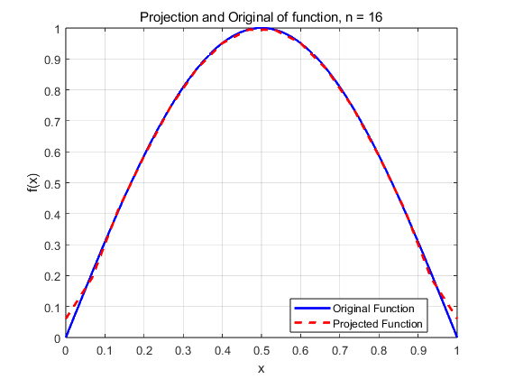

Contents
clc;
clear;
close all;
f = @(x) (2*x).*sin(2*pi * x) + 3;
f = @(x) sin(pi*x)
n_values = [4, 8, 16, 32, 64];
error_values = zeros(size(n_values));
for k = 1:length(n_values)
n = n_values(k);
x = linspace(0, 1, n);
projected_function = l2_projection_1D(x, f);
error = 0;
for i = 1:n-1
exact_integral = integral(@(x) abs(f(x) - projected_function(i)), x(i), x(i + 1));
error = error + exact_integral;
end
error_values(k) = error;
x_values = linspace(0, 1, 1000);
figure;
plot(x_values, f(x_values), 'b', 'LineWidth', 2); hold on;
plot(x, projected_function, 'r--', 'LineWidth', 2);
legend('Original Function', 'Projected Function', 'Location', 'best');
xlabel('x');
ylabel('f(x)');
title(['Projection and Original of function, n = ', num2str(n)]);
grid on;
hold off;
end
figure;
loglog(n_values, error_values, '-o', 'LineWidth', 2);
xlabel('n');
ylabel('Error');
title('Convergence Error');
grid on;
rate = -(log(error_values(2:end) ) - log(error_values(1:end-1))) / log(2);
disp('error rate');
disp(rate)
Projection 함수 정의
function [projected_function] = l2_projection_1D(x, f)
n = length(x);
h = x(2) - x(1);
loadVector = zeros(n, 1);
for i = 1:n-1
intervalLength = x(i + 1) - x(i);
nGQ = 4;
approx_values = GQIntegral1D(f, x(i), x(i+1), nGQ, 10);
loadVector(i) = loadVector(i) + approx_values/2;
loadVector(i + 1) = loadVector(i + 1) + approx_values/2;
end
local_M = [h/3, h/6; h/6, h/3];
M = sparse(n, n);
for i = 1:n-1
M(i:i+1, i:i+1) = M(i:i+1, i:i+1) + local_M;
end
x_solution = M \ loadVector;
projected_function = x_solution;
end
f =
다음 값을 갖는 function_handle:
@(x)sin(pi*x)
error rate
0.9426 1.0150 1.0131 1.0076
